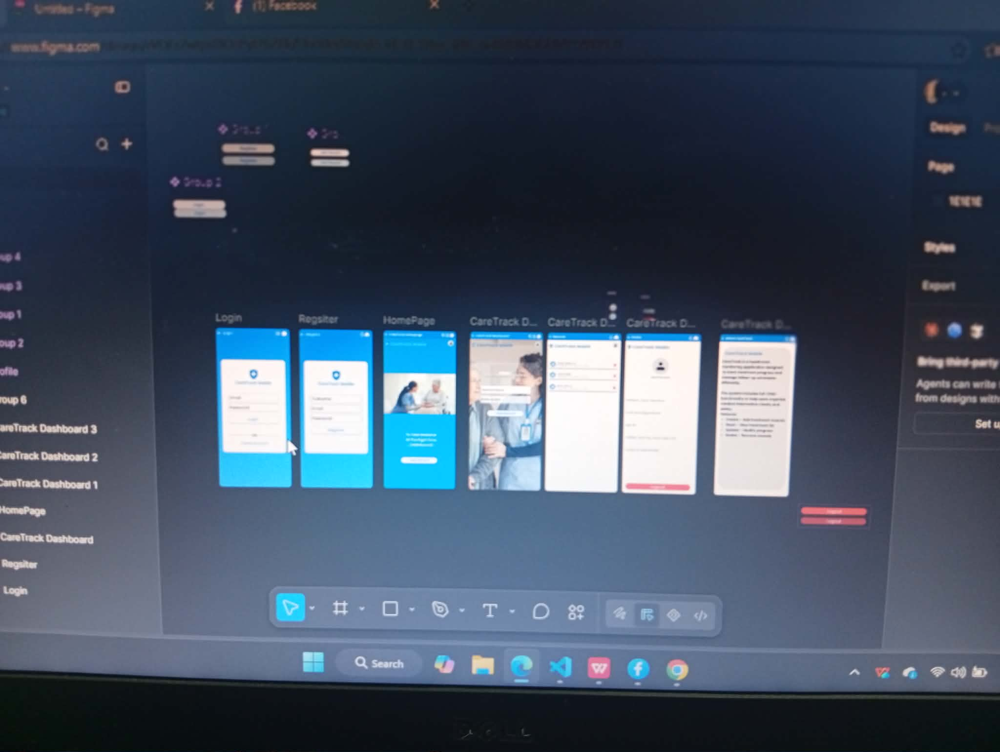
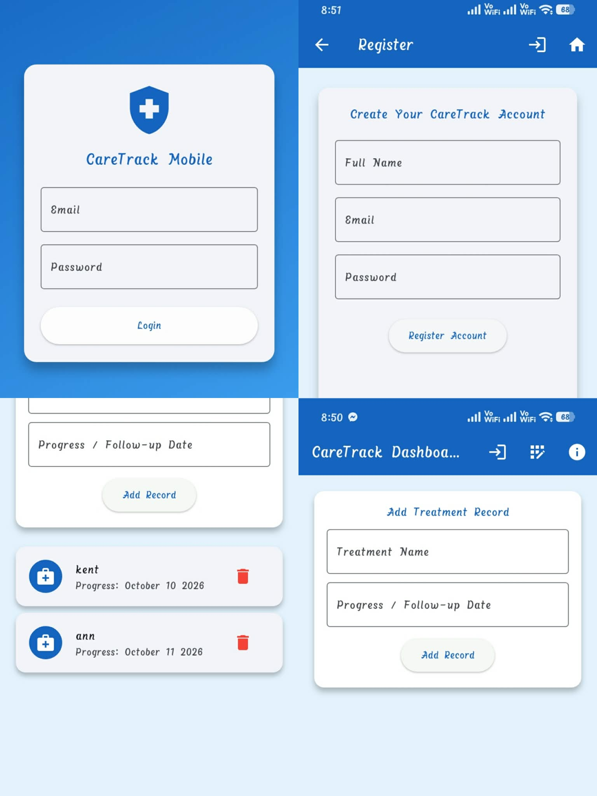

A 20-year-old student passionate about learning web development, building digital projects, and starting my tech journey.
View My WorkI live in Lower Tabucanal Poblacion Pardo, Cebu City. I am currently exploring front-end web development, focusing on writing clean HTML and CSS layouts.
Work Experience: I do not have formal professional experience yet, but I am willing to learn, ready to face new challenges, and excited to discover more in the tech industry!

Figma Prototyping For Smooth And User Friendly Design.
My Contribution: Designed the structure and wrote all the style rules.

Web Application Rechecking And Testing For The Final Lunching Of The Application.
My Contribution: Handled layout structuring and responsive formatting.
Age: 20
Address: Lower Tabucanal Poblacion Pardo, Cebu City
Contact No: 09515846374
Email: kentmarcel.dacillo@gmail.com
Elementary School: Pardo Elementary School
High School: Pardo National High School
Senior High School: Pardo National High School
College School: Cebu Eastern College
Although I do not have professional work experience yet, I am eager to learn, ready to experience new environments, and motivated to improve my skills in web development and technology.
Feel free to reach out for opportunities, questions, or collaboration!